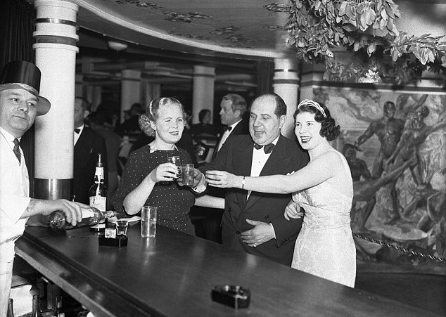

Nossos Serviços

Apostas
Mais de cem anos de honestidade.

Destilaria
Bebidas do mais alto padrão de qualidade

Alfaiataria
Entregando classe e elegancia na forma de se vestir
Nos negócios desde de 1919!
Fundada em 1919, a Shelby Company LTD construiu, ao longo de mais de um século, uma trajetória marcada por tradição, visão estratégica e expansão constante. O que começou como um empreendimento familiar consolidou-se como uma organização multifacetada, capaz de atravessar gerações mantendo sua essência e autoridade no mercado. Entre seus negócios mais emblemáticos, destacam-se as tradicionais Destilarias Shelby, reconhecidas pela produção refinada e pelo respeito aos métodos clássicos. No coração dessa herança está o lendário Garrison Pub, um espaço que transcende o tempo, reunindo história, cultura e encontros que definiram décadas de influência. Paralelamente, a empresa estabeleceu forte presença no universo das apostas em cavalos, um setor onde precisão, análise e ousadia caminham lado a lado. Essa atuação consolidou o nome Shelby como sinônimo de estratégia e domínio em ambientes competitivos. Expandindo suas fronteiras, a Shelby Company LTD também se destacou no comércio internacional, operando com excelência nos setores de exportação e importação. Com presença em diferentes mercados ao redor do mundo, a empresa construiu uma rede sólida, baseada em confiança, discrição e eficiência. Hoje, após mais de 100 anos de história, a Shelby Company LTD permanece fiel às suas raízes, enquanto continua a evoluir. Sua trajetória é um testemunho de resiliência, adaptação e, acima de tudo, de uma visão que sempre esteve à frente de seu tempo.
Mais de cem anos de honestidade.
Bebidas do mais alto padrão de qualidade
Entregando classe e elegancia na forma de se vestir
A Shelby Company LTD mantém, há mais de um século, uma rede restrita de associados. O acesso é concedido apenas àqueles que compartilham de nossa visão, discrição e compromisso com a excelência. Nossos associados desfrutam de acesso privilegiado a operações exclusivas, ambientes reservados — como o tradicional Garrison Pub — e oportunidades estratégicas em nossos diversos empreendimentos. Caso deseje manifestar interesse, preencha o formulário abaixo. Caso possua uma indicação, a insira na área indicada. Sua solicitação será analisada com o devido rigor.
